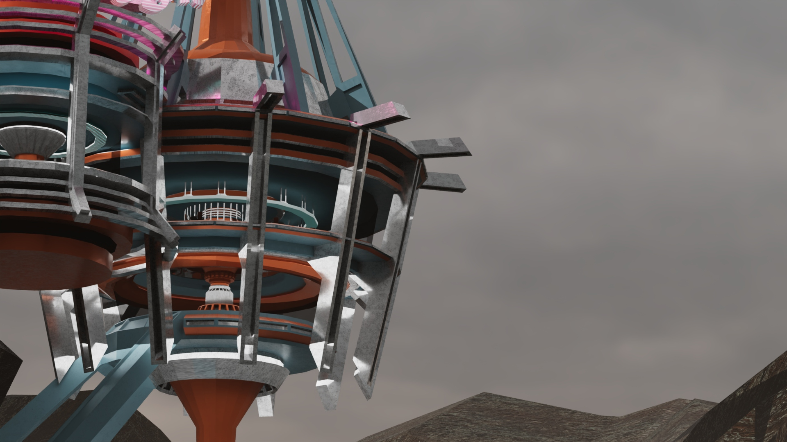

This is one of my latest P5 projects. Using the TextToPoints function in P5.js, I was able to manipulate text effects with greater finesse. This project pixelates the text and projects it onto a dot matrix. The code then detects the user's mouse position, causing the dot matrix projected onto the text to enlarge when the mouse approaches and become indistinguishable from other dots when the mouse moves away. To recreate the texture of early oscilloscope displays, I also added a noise module to make all the circles blink and periodically increase or decrease in size. Again, most of the code is encapsulated; feel free to modify it.
Keywords: graphic-design, procedural-generation, animated, interaction design